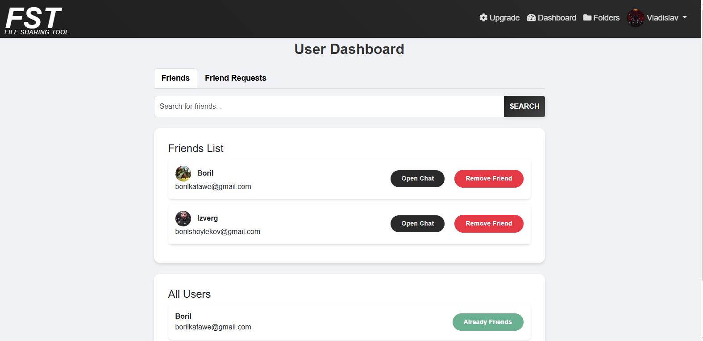

<about>
Hi, My name is Boril. I've always been excited about technology,
especially the idea that you can build almost anything if you put the time into it pcc of course.
It feels awesome to have the ability to build new things, solve problems,
and to challenge yourself.
Outside of IT field, I'm into
Gaming, Power-lifting, and reading psychology literature that let me relax,
or make me better as an individual.
At the moment, I am independently learning computer science.
I have around 2 years of hands-on experience in IT, working on both front-end and back-end development projects.
Recently, I've been diving deeper into the world of AI/ML/DL, learning new skills and expanding my knowledge base.
I'm always eager to learn and grow, and I'm excited to see where my journey will take me next.
If you're seeking a motivated and adaptable team member, I'd be excited to connect. Whether it's development,
researching, throw ideas I'm eager to contribute my skills, passion, and fresh energy to your team.
Let's work together and create something outstanding!
</about>
<blog>
Over the past few months, I've been diving deep into the world of web and desktop application development. I've been working on an exciting file-sharing platform similar to "MEGA.nz", where I've built features like secure file uploads, folder management, and a real-time chat system for users to communicate.
Alongside, I've been enhancing the UI and UX of the project to make it sleek and modern. I've also gained hands-on experience with PostgreSQL, MongoDB, PyQt6, NodeJS, and Electron for building desktop apps and websites that allow users to share files and folders directly with others, including cloud storage functionality.
Through this journey, I've developed new skills in user authentication, implementing folder upload functionalities, database management, scaling big projects, and integrating payment systems. It's been an incredible learning experience, and I'm eager to continue developing more innovative features for the platform.

</blog>
<education>
Proffessional Degree - Proffessional Techinal Highschool of Varna
September 2018 - May 2023
My studies in Computer Systems and Technology, provided me with skills in hardware assembly,
troubleshooting, and software installation. I gained expertise in
analog and digital circuits, microprocessors, computer networks and protocols,
programming language C++, web design and a glimpse of cybersecurity.
Additionally, I developed practical experience in diagnosing and maintaining
computer systems, peripherals, and network configurations, preparing me
for roles in IT infrastructure management, network engineering, and system architecture.
Advanced Certificate - Software Development road Python
July 2023 - May 2024
My studies focused on the principles of software development using Python,
covering a wide range of topics to build a strong foundation. These included
advanced Python programming concepts, front-end and back-end development with Python
frameworks, and database management. I also delved into areas like computer networking,
server-side scripting, operating system interaction, and numerical algorithms.
Additionally, I gained expertise in automation, API development, and cybersecurity,
providing me with a comprehensive understanding of software development in Python.
</education>